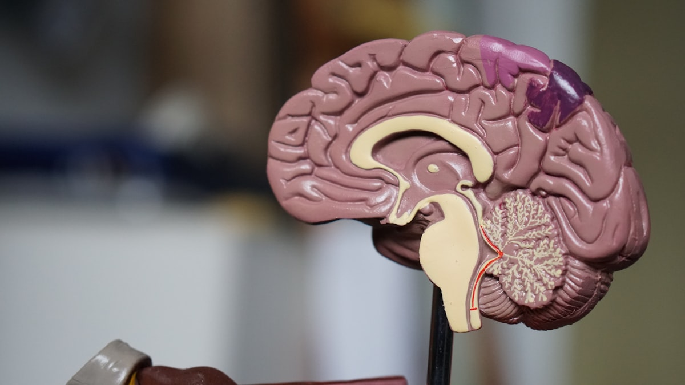

We build computing systems that are dependable under faults, efficient under tight energy budgets, and intelligent by borrowing principles from the brain. Four pillars, one integrated stack. 🔬
A "good" AI is not just about accuracy. It also needs to be robust/resilient against uncertainties, e.g., hardware faults/errors, adversarial input data, environmental variations, etc. How to make robust AI systems?
As transistors become even smaller, hardware is more susceptible to errors/faults. How can we make reliable hardware?
A computing system needs comprehensive testing and validation. Fuzz testing is a popular testing method. Here are some examples:

Hyperdimensional computing (HDC) is an emerging AI model family mimicking the "human brain". It achieves success in various applications. Check this coverage from WIRED, and a few examples below.
Dynamic delay modeling of functional units under voltage and temperature variations (TCAD'21).
Input-aware learning-based error model of voltage-scaled functional units (TCAD'20).
Differential fuzz testing of brain-inspired hyperdimensional computing (DAC'21).
Efficient drug discovery using brain-inspired hyperdimensional computing (BIBM'22).